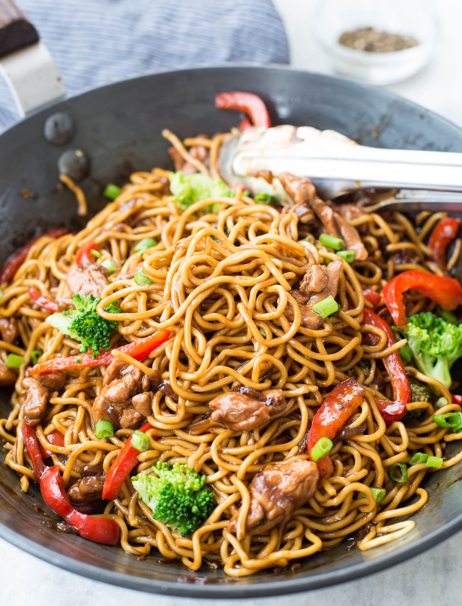

Return to Home

The secret behind making these noodles delicious is the stir fry sauce. It is not only quick
to make but packs flavor.
It goes great with noodles and can be used with fried rice too (Yay! one sauce - two recipes).
Ingredients
- Instant Ramen Noodles
- Chicken thigh
- Stir-fry sauce
- Soy Sauce
- Rice Vinegar
- Sugar
- Pepper
- Start with making the stir-fry sauce. Add all the ingredients mentioned under the sauce, in a jar or a
mixing bowl. Keep
aside.
- Boil Instant ramen noodles as per instructions in the package.(~ 1 minute)
- In a pan heat oil. Add minced garlic and sliced Onion. Cook until the onion softens
- Add chicken thigh pieces. Cook for 2-3 minutes on high heat.
- Add the stir-fry sauce, followed by bell pepper,broccoli florets and Carrot. Mix everything well. Let it
cook till
vegetables are crispy (~ minutes)
- Just when the sauce starts to thicken up, add water and ramen blocks. let it cook for a couple of
minutes.Then flip and
break any bigger chunk of ramen. cook for another 2 minutes.
- Garnish with spring onion. Serve Immediately.